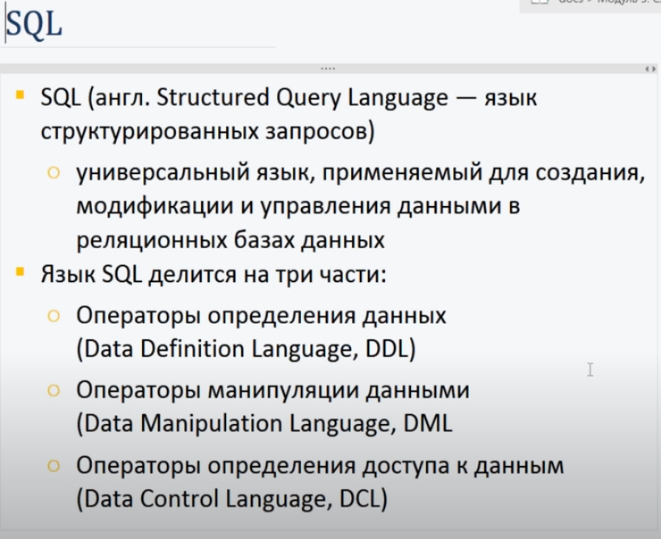
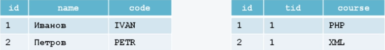
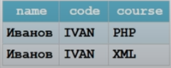

Начало. Уровень 2 день 2, 00:46:10
SQL:
ORDER BY - это сортировка по полю в порядке возрастания ASC или убывания DESC.
LIMIT - это количество записей над которыми будут производиться действия.
Хороший сайт, где указаны примеры работы с PHP, с БД, с куки, с сессиями и т.д.тут.
Выборка данных:
SELECT что выбрать
[FROM таблица]
[WHERE условие]
[GROUP BY поле]
[ORDER BY поле]
[LIMIT количество записей]
//получить все поля под id=1 и id=2
SELECT *
FROM news
WHERE id IN (1,2)
//получить все новости написаные автором под id = 1
SELECT *
FROM news
WHERE author_id = '1'
//получить 5 последних новостей написаные от новых к старым
SELECT *
FROM news
ORDER BY date
DESC
LIMIT 5
//Выбрать все имена из поля name таблицы teacher. По умолчанию вернёт в том порядке, в котором были добавлены.
SELECT name FROM teacher
//Выбрать все имена, адреса, города из таблицы teacher и отсортировать их по полю name
SELECT name, addr, city
FROM teacher
ORDER BY name
//Выбрать все названия поля title из таблицы courses, но только те где поле length > 30
SELECT title
FROM courses
WHERE length > 30
//Выбрать все поля из таблицы courses, но только те где поле length > 30 и эти названия должны иметь в начале слово 'Web', например Web-disigner, Web-programmer. На боевых сайтах не рекрмендуюут использовать *
SELECT *
FROM courses
WHERE length > 30
AND title LIKE 'Web%'
//Выбрать уникальные значения продолжительности курсов
SELECT DISTINCT length
FROM courses
Объединение таблиц.
Есть 2 таблицы в БД. Одна это teachers, другая lessons:
Нам нужно узнать кто из учитилей читал какие курсы. Как видно из таблицы читал курсы только Иванов. Запрос будет выглядеть так:
//выбрать имя, код имени и курс из таблицы teachers в связке с таблицей lessons по критерию t.id = l.tid
SELECT t.name, t.code, l.course
FROM teacher t
INNER JOIN lessons l ON t.id = l.tid
В результате выборки получим такой массив:
Вставка новой записи:
INSERT INTO название табл.(поле1, поле2)
VALUES (значение1, значение2)
INSERT INTO название табл.
VALUES (значение1, значение2, значение3)
//запись нескольких строк в таблицу
INSERT INTO название табл.(поле1, поле2)
VALUES (значение1, значение2), (значение1, значение2)
//записать в таблицу courses в каждое поле по порядку значения. В первое поле - NULL, во второе поле PHP и так далее.
INSERT INTO courses
VALUES (NULL, 'PHP', '...', 40)
//записать в таблицу courses в поле title - PHP и в поле length значение 40
INSERT INTO courses()
VALUES (NULL, 'PHP', '...', 40)
//записать в поля id, name, text, data следующие значения из переменных. Важно!!! Переменные в запросе оборачиваем в ''
$name = 'Маша';
$text = 'Сообщение от Маши';
$sqlInsert = "INSERT INTO users VALUES(NULL, '$name', '$text', NOW())";
$result = mysqli_query($link, $sqlInsert);
Удаление записи:
DELETE FROM название табл.
[WHERE условие]
[ORDER BY поле]
[LIMIT количество записей]
//удаление по дате. Например, удалить все новости записаные раньше 5ти дней назад
DELETE FROM название табл.
WHERE date < DATE_SUB(CURDATE(), INTERVAL 5 DAY)
//CURDATE() - дата сейчас
//INTERVAL 5 DAY - отрезок времени 5 дней
//DATA_SUB(a, b) - вычесть из даты a отрезок времени b
//удалить 3 последние новости(последние значит свежие записи)
DELETE FROM название табл.
ORDER BY date
DESC
LIMIT 3
//удалить записи у которых поле date = '2021-06-11'
DELETE FROM название табл.
WHERE date = '2021-06-11'
//удалить все записи в таблице
DELETE FROM название табл.
Изменение записи:
UPDATE название табл.
SET поле1 = выражение1, поле2 = выражение2
WHERE условие
[ORDER BY поле]
[LIMIT количество записей]
//надо скрыть все новости на сайте. За скрытие и показ отвечает поле status, 1 - показывать, 0 - скрывать
UPDATE news
SET status = '0'
WHERE условие
//увеличить зарплату и премию учителям фамилии которых начинаются на указанные слова - Иванов, Иванова, Ивановских и т.д.
UPDATE teachers
SET salary = salary * 2, premia = premia = 10
WHERE name LIKE 'Иванов%'
OR name LIKE 'Петров%'
OR name LIKE 'Сидоров%'
//запрос делает то же что и запрос выше, но более гибкий, так как мы будем вместо фамилий подставлять переменные
UPDATE teachers
SET salary = salary * 2, premia = premia = 10
WHERE name IN ('Иванов', 'Петров', 'Сидоров')
//также как и при удалении если не указать условие, то изменению подлежат все записи
Создание базы данных:
CREATE DATABASE news
Создание таблицы и полей(MySQL):
CREATE TABLE items(
id int NOT NULL auto_increment,
title varchar(255) NOT NULL default '',
description varchar(255) NOT NULL default '',
context text,
author varchar(50) NOT NULL default '',
pubdate timestamp NOT NULL default '',
PRIMARY KEY (id)
)